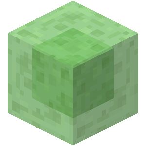

Daniel Millar
Software Engineer
Engineering solutions to complex problems.
About
I'm a back-end focused software engineer who enjoys solving complex engineering challenges. I'm particularly interested in scalable systems and software that has to perform reliably under real-world load. The kinds of engineering problems tackled by companies like SpaceX and Tesla are exactly the sort of challenges that motivate me.
I primarily build with Java and Kotlin, alongside TypeScript and the rest of my backend tooling. I like writing code that's clean and efficient, the kind that makes sense when you revisit it months later. I'm always looking to deepen my knowledge of distributed systems and scalable backend architecture.
Projects
KwikMedical
Academic ProjectEmergency medical services system designed with Service Oriented Architecture. Streamlines the entire emergency response workflow from call intake through ambulance dispatch to hospital coordination.
Kotlin · Ktor · TypeScript · React · React Native · WebSockets · H2 Database
Experiences
Production Systems Operator - Minecraft Server Network
Built and operated a production Minecraft server network supporting over 100 concurrent players, developing custom Java plugins, managing Linux infrastructure, designing database-backed systems and maintaining 99.9% uptime.
- Custom Plugin Development
- Real-time Performance Optimization
- Active Community Management
Skills & Technologies
Languages
- Kotlin
- Java
- JavaScript
- TypeScript
Tools & Platforms
- IntelliJ IDEA
- VS Code
- Git
- GitHub
- Gradle
- Node.js
- Docker
Databases & Systems
- MongoDB
- MySQL
- Windows
- Linux
Education
-
BEng (Hons) Software Engineering
Key Modules
- Agile Project Management
- Software Architecture
- Artificial Intelligence
- Concurrent & Parallel Systems
- Secure Software Development
- Multi-Agent Systems
- Advanced Database Systems
- Data Analytics
-
HND Software Engineering with Emerging Technologies
Key Modules
- Object-Oriented Programming & Design
- Data Structures
- Web Development
- Software Security
- Emerging Technologies
Contact
Feel free to reach out if you'd like to work together or just ask a question.